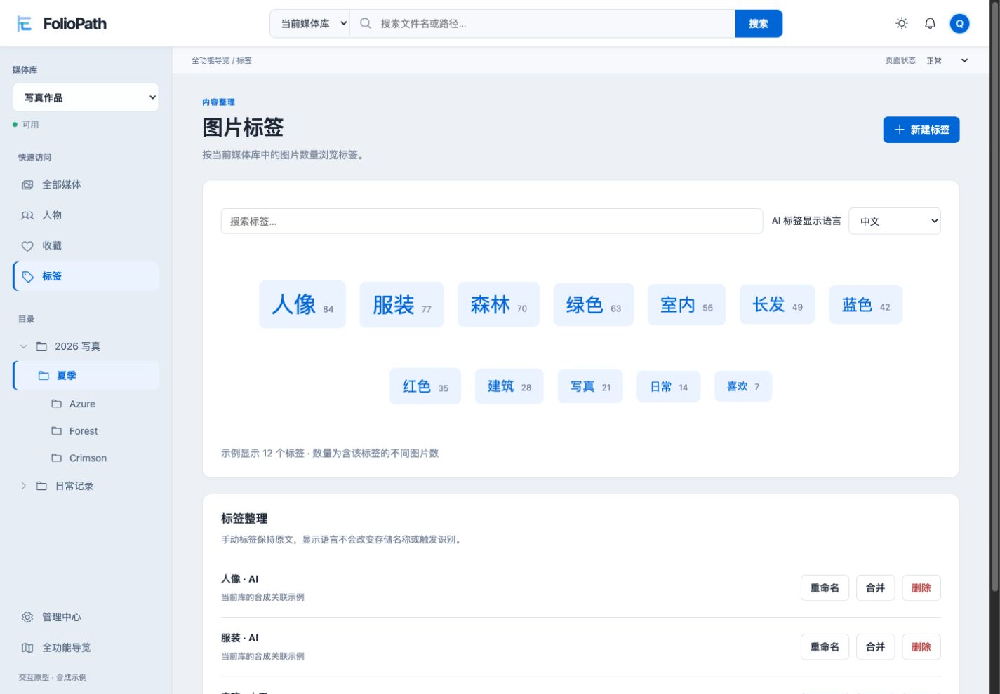
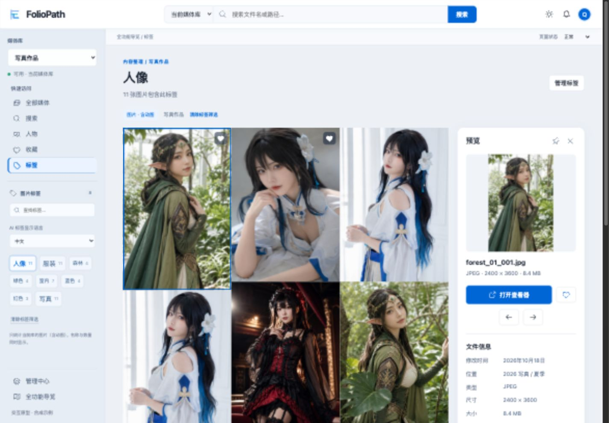

<!doctype html><html lang="zh"><meta charset="utf-8"><title>标签工作区 / 调整前后</title><style>body{margin:0;background:#edf1f6;display:grid;grid-template-columns:1fr 1fr;gap:12px;font:14px system-ui}figure{margin:0}figcaption{padding:14px;background:#fff}img{display:block;width:100%;height:auto}</style><figure><figcaption>调整前：标签页仍有目录，标签云挤占主内容</figcaption></figure><figure><figcaption>调整后：左侧选标签，中间展示图片</figcaption></figure></html>
